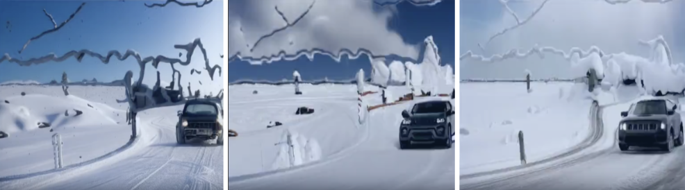

Improving Control and Consistency of Diffusion-Generated Video
An investigation of state of the art methods and new approaches

3 frames from a video of a jeep driving through the snow, generated with Stable Diffusion and Uni-Controlnet
About the project
This is a semester-long project for the course CMSC720 - Foundations of Deep Learning. Starting from the beginning of the Spring 2024 semester in January, my partner (Andy Qu) and I went through the process of:
- Doing literature review of ML concepts
- Investigating novel approaches for potential research
- Proposing a research project
- Implementing experiments using our school's GPU cluster
- Writing up a NEURIPS format paper
- Going through a formal double-blind peer-review process within our class
- Submitting a final paper that was "accepted" by our professor
Abstract
With the rise of Generative AI, recent improvements in diffusion techniques have been developed to generate art contextually accurate to user input. However, video output from Stable Diffusion models still seem to have sudden differences between neighboring frames and can be easily differentiated from videos taken in real life at times. Subjects and background environments in generated videos are prone to suddenly shifting appearance, making the video more identifiable as a result of AI generation. In particular, we found that even state-of-the art video generation and editing models struggled when occlusion was present. We propose a project to find a solution to improve the smoothness and consistency of video generation network output by using various approaches such as ControlNet and neural layered atlases. Additionally, we intend to combine newer concepts like Uni-ControlNet with existing text to video models in order to enable even better control of video results.